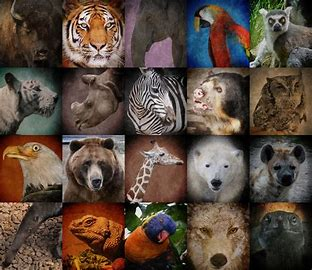

Endangered species are those considered to be at risk of extinction, meaning that there are so few left of their kind that they could disappear from the planet altogether. Endangered species are threatened by factors such as habitat loss, hunting, disease and climate change, and usually, endangered species, have a declining population or a very limited range.
Animals and plants face a large number of different threats with many of them being a direct result of human activity.
Some of the most common threats include:
Habitat loss and habitat fragmentation
– The ever expanding human population constantly requires additional space and resources. Land is being cleared to harvest products such as timber as well as to make way for human settlement, agriculture and transport links.
Hunting and poaching
– A wide variety of animals have been hunted, or fished, beyond sustainable levels and now face possible extinction. Species, such as the tiger, are often hunted because they provide a resource such as food or parts which are used in traditional ‘medicine’. However, some species, such as the cheetah, have been persecuted after gaining a negative reputation for feeding upon livestock or crops or posing a threat to human safety.
Invasive species
– Humans have introduced non-native species (both intentionally and accidentally) to a wide variety of habitats, often with devastating consequences. Introduced species may prove highly adaptable and outcompete native species for resources. Introduced predators can decimate local species which are not adapted to avoid predation, for example ground dwelling birds like the kakapo.
Climate change
- Droughts, ocean acidification, the loss of sea ice and an increase in storms and extreme weather events can all threaten species’ survival. Sedentary species like plants or specialist species which inhabit small ranges or islands, or those with specific habitat requirements are particularly vulnerable.
Disease
– Small populations, especially those which are limited in terms of genetic diversity are particularly vulnerable to disease. Disease can often be spread by domestic animals or accidentally introduced by humans travelling from an affected area to one which had not previously been exposed.
Collection / pet trade
– Many animals and plants, such as the Venus flytrap, have been collected from the wild beyond sustainable levels to be sold through the pet trade or be kept in private horticultural collections.
Pollution
– Acid rain, heavy metals, pesticides, plastic waste and oil spills all harm the environment and put species at risk. Chemicals are particularly harmful to species that live in water.
As well as supporting conservation organisations there are some simple steps that everybody can take to help protect the natural world and the species in it. Here are some ideas: Recycle – Help protect the rainforests - recycling one tonne of paper can save 17 trees and preserve the habitat of a whole host of endangered species. Use less energy – An old tip but a good one, you can save yourself money and help the environment too. For example, energy saving light bulbs use 80 percent less energy than a standard bulb, yet produce the same amount of light. Choose sustainable products – Make sure that all the products you buy are sustainably sourced, from food and paper to timber. Make your voice heard – Petition for change! Many campaigns to help wildlife are underway but they need your support. Clean up your act – Volunteer to take part in a litter pick or beach clean up. Get involved – Taking part in wildlife surveys is a fantastic way to enjoy the great outdoors and find out more about your local wildlife. By assessing what species are present you can help scientists plan how best to protect them in the future. Spread the word – Through the Arkive project we hope to educate and engage people with the natural world. If you are enthusiastic about saving species then why not encourage your friends and family to learn more. Find out how you can get involved.
Protect wildlife habitat. The greatest threat that faces many species is the widespread destruction of habitat. Scientists tell us the best way to protect endangered species is to protect the special places where they live. Wildlife must have places to find food, shelter and raise their young.